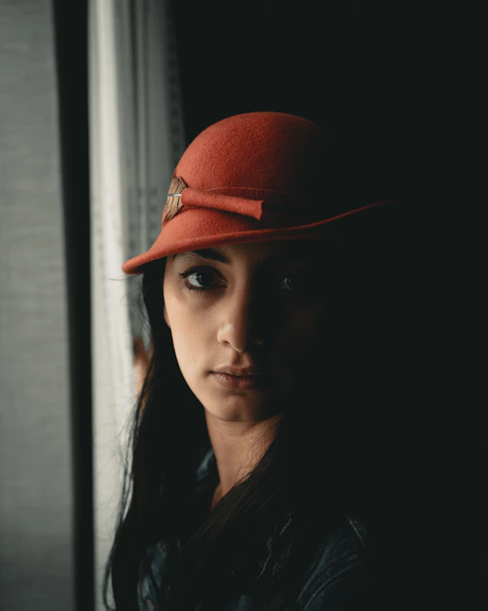
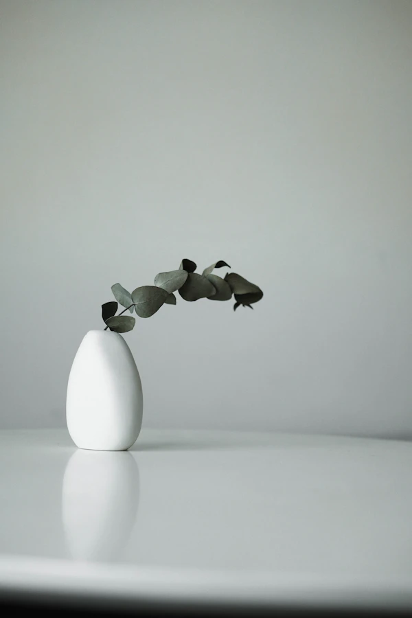
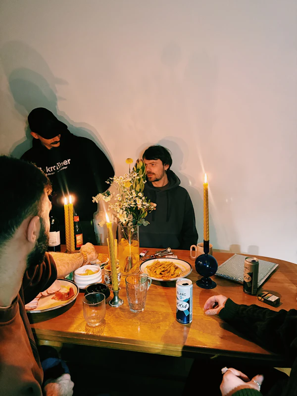
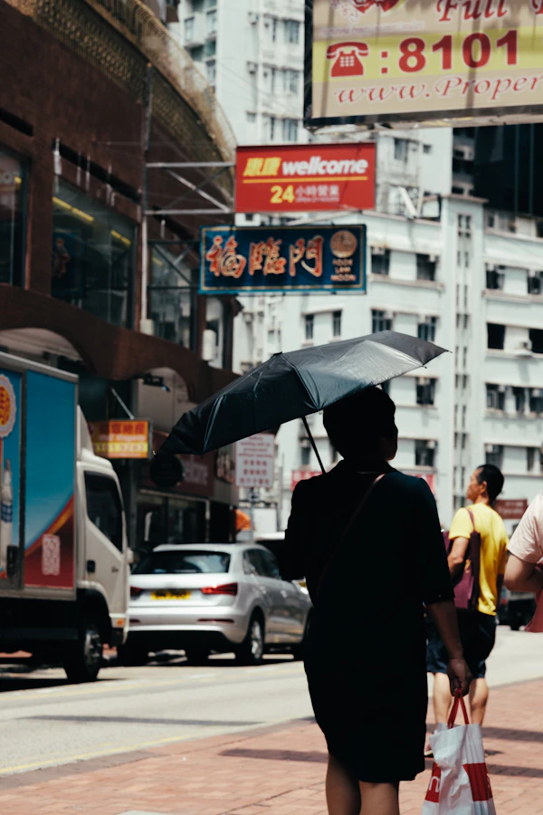
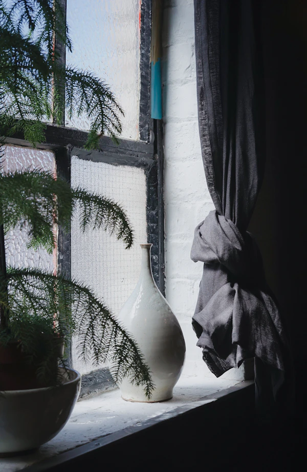
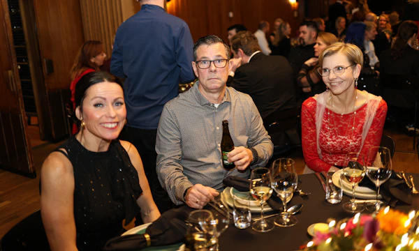
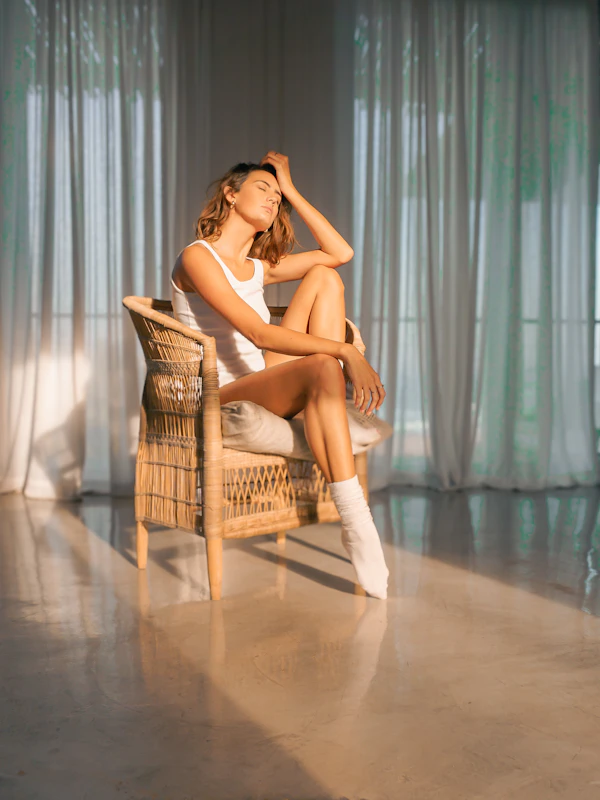
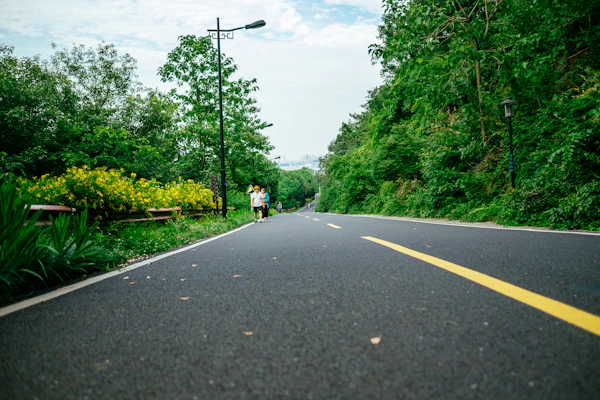

FOTOGRAFI / PORTOFOLIO KONSEP
Foto yang terasa
seperti kamu.
Potret, acara, dan cerita brand dengan arahan yang santai dan hasil yang tetap personal.
Sebuah konsep oleh fotografer fiktif Raka Pradana. Foto di halaman ini adalah karya stok berlisensi, bukan hasil pemotretan Raka.
Cahaya alami.
Gestur yang tidak dipaksakan.
Ruang untuk menjadi diri sendiri.
01 / PILIHAN KARYA
CONTACT SHEET · 9 FRAMEOrang, ruang,
dan hal-hal di antaranya.
Pilihan foto stok sebagai arah visual konsep. Bukan proyek, klien, atau karya Raka Pradana. Klik foto untuk melihat bingkai utuh dan kredit aslinya.


Cahaya dari samping
Potret personal · ilustrasi konsep
Foto stok: Clay Banks / Unsplash

Bentuk yang sederhana
Still life · ilustrasi konsep
Foto stok: Linh Le / Unsplash

Satu meja, banyak cerita
Pertemuan kecil · ilustrasi konsep
Foto stok: Andrii Solok / Unsplash
Sore yang hangat
Potret outdoor · ilustrasi konsep
Foto stok: Alef Morais / Unsplash

Di sela kota
Street photography · ilustrasi konsep
Foto stok: David Clarke / Unsplash

Sudut yang tenang
Produk & ruang · ilustrasi konsep
Foto stok: Toa Heftiba / Unsplash

Malam untuk berkumpul
Dokumentasi acara · ilustrasi konsep
Foto stok: Filip Rankovic Grobgaard / Unsplash

Duduk sejenak
Potret natural · ilustrasi konsep
Foto stok: Morgan Nott / Unsplash

Jalan pulang
Catatan keseharian · ilustrasi konsep
Foto stok: Jerry Wang / UnsplashAKHIR CONTACT SHEET Temukan pendekatan yang sesuai dengan ceritamu.
02 / JASA & PAKET KONSEP
MULAI DARI KEBUTUHANMUSesi yang berbeda.
Perhatian yang sama.
Pilih jenis pemotretan untuk melihat gambaran sesi. Semua angka berikut adalah ilustrasi, bukan tarif atau penawaran yang dapat dipesan.
Contoh paket untuk demo—harga dan detail perlu dikonfirmasi.
A /Potret personalIndividu, profil profesional, dan kreator
Untuk kamu yang membutuhkan foto profil atau ingin merekam fase baru dalam hidup. Konsep sesi dimulai dengan ngobrol singkat, memilih cahaya yang nyaman, lalu mengarahkan gestur seperlunya.
Contoh hasil: pilihan foto digital dengan penyuntingan warna yang konsisten.
ILUSTRASI PAKET / BUKAN TARIF NYATA
Rp750.000–1.250.000
Contoh durasi 60–90 menit
Contoh hasil 10–15 foto edit
B /Fotografi acaraPertemuan keluarga dan komunitas
Untuk acara berskala kecil yang ingin didokumentasikan dengan dekat. Konsep liputan berfokus pada interaksi, suasana ruang, detail acara, dan potret bersama pada waktu yang disepakati.
Contoh hasil: rangkaian foto digital yang mengikuti alur acara.
ILUSTRASI PAKET / BUKAN TARIF NYATA
Rp1.500.000–3.000.000
Contoh durasi 2–3 jam
Contoh hasil 40–60 foto edit
C /Produk & brandProduk, menu, ruang usaha, dan konten
Untuk pemilik usaha atau kreator yang membutuhkan visual dengan arah yang jelas. Konsep sesi diawali referensi, daftar objek, dan rencana penggunaan foto agar sudut serta komposisinya tepat guna.
Contoh hasil: foto detail, suasana, dan objek untuk katalog atau media sosial.
ILUSTRASI PAKET / BUKAN TARIF NYATA
Rp900.000–2.000.000
Contoh durasi 1–2 jam
Contoh hasil 12–20 foto edit
Durasi, jumlah foto, lisensi penggunaan, lokasi, biaya tambahan, dan waktu penyerahan harus disepakati pada pemesanan nyata. Brand demo ini belum menerima pemesanan.
03 / CARA KERJA
DARI OBROLAN KE BINGKAIAda ruang untuk
mengenal ceritamu dulu.
Ceritakan kebutuhan.
Mulai dari tujuan foto, tanggal yang diinginkan, dan suasana yang kamu bayangkan.
Susun arah sesi.
Diskusikan jenis sesi, lokasi, referensi, ruang lingkup, dan kesepakatan penggunaan foto.
Jalani pemotretan.
Ambil waktu untuk menyesuaikan diri. Arahan diberikan secukupnya, tanpa memaksakan gestur.
Temukan hasilnya.
Pilih atau terima foto yang disunting sesuai alur serta waktu yang telah disepakati.
Alur kerja di atas merupakan contoh konsep, bukan proses pemesanan aktif.
04 / DI BALIK RUANG REKA
CATATAN PENDEKATANRaka Pradana FOTOGRAFER FIKTIF
“Saya mulai dengan mendengarkan.”
Dalam konsep Ruang Reka, pemotretan tidak dimulai dengan daftar pose. Saya ingin tahu foto ini akan digunakan untuk apa, bagian mana yang ingin kamu tampilkan, dan apa yang membuatmu nyaman.
Kita bisa mulai dengan gerakan sederhana: duduk, berjalan pelan, atau mengalihkan pandangan ke jendela. Saya membayangkan foto dengan cahaya yang jujur, warna yang tenang, dan cukup ruang untuk ekspresi yang muncul sendiri.
Narasi ini adalah suara konsep tokoh fiktif. Tidak ada foto profil, riwayat pekerjaan, klaim klien, atau testimoni nyata yang diatasnamakan Raka.
Ceritakan yang kamu bayangkan ↗05 / MULAI PERCAKAPAN
KONSULTASI DEMOAda cerita
yang ingin dibuat?
Ceritakan jenis pemotretan, tanggal, dan lokasi yang kamu inginkan. Kita mulai dari gambaran sederhana.
Ruang Reka Photo adalah brand fiktif. Pemesanan belum tersedia. Tombol kontak berikut mengarah ke simulasi, tanpa membuka percakapan atau mengirim email.